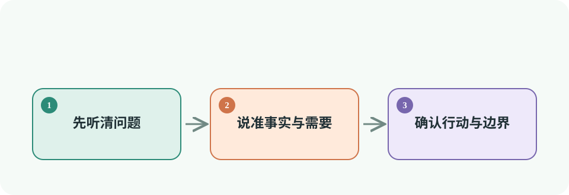
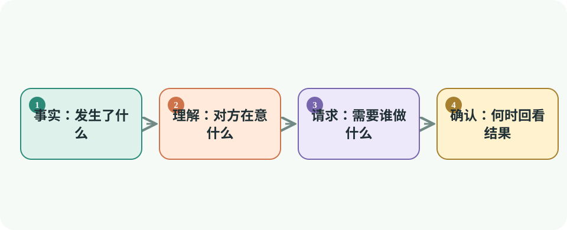

沟通闭环：从听懂到行动
沟通不是把话说完，而是让事实、理解、请求与下一步形成闭环
01 · 从一个具体问题开始
同一句“这件事我已经说过了”，可能意味着一方认为自己完成了通知，另一方却仍不知道谁负责、何时完成、出现变化找谁。沟通失败往往不是缺少语言，而是双方没有共享同一份问题定义。
把一次沟通看成一个可检查的闭环：先理解问题，再表达事实与需要，随后确认双方理解，最后落到行动、责任或边界。
02 · 把方法拆成可观察的动作
从理解对方、表达事实与需求，到确认行动和复盘，建立可迁移的沟通底层能力。 这些动作是教学工具，不是必须逐字套用的公式。

先听清问题
复述对方真正的问题，而不是立即反驳。
说准事实与需要
区分事实、推测、感受和请求。
确认行动与边界
用负责人、时间、标准或边界收束谈话。
03 · 多轮案例：回应怎样随着信息推进
以一次进度汇报为例，观察对话如何从状态说明推进到决策请求。
周会汇报进展
研发已完成八成，但本周测试资源不足。主管只有半分钟了解状态。
沟通目标：说明延期风险并请主管确认验收日期。
这个任务到底到哪一步了？
目前研发完成约八成，影响验收的是本周测试资源不足。我判断交付日期存在风险；我会列出风险和可选验收时间，今天请您确认哪一个日期对外承诺。
测试资源不够，为什么现在才说？
这个风险确实应该更早提示，我先承担信息同步不及时的问题。目前已确认的是研发进度与测试缺口，尚未确认的是能否协调到额外测试人手。
那下一步需要我做什么？
需要您拍板两件事：优先协调测试支援，还是调整验收日期；我负责整理风险表和执行结果。
示范回应用于观察结构，不是唯一正确答案。真实沟通应根据事实、关系和风险调整。

04 · 交互拆解：逐步检查每个动作
选择一个动作，观察它解决的具体问题。所有步骤默认都在页面中可读；按钮只是帮助你聚焦其中一层。
怎样把沟通原则变成下一句话
先听清问题
复述对方真正的问题，而不是立即反驳。
检查点：这一轮是否回应了对方刚刚提出的具体问题？
说准事实与需要
区分事实、推测、感受和请求。
检查点：这一轮是否回应了对方刚刚提出的具体问题？
确认行动与边界
用负责人、时间、标准或边界收束谈话。
检查点：这一轮是否回应了对方刚刚提出的具体问题？
当前聚焦第 1 步。
05 · 常见失误与适用边界
- 只顾解释自己的立场，没有复述对方真正的问题。
- 把推测说成事实，导致双方围绕错误前提争论。
- 用“尽快、注意一下、保持沟通”代替负责人、时间和验收条件。
任何沟通框架都不能替代事实核查、正式流程、法律意见或现实安全判断。遇到不确定信息，应明确说出未知并约定核验方式。
06 · 把文章变成一次练习
先从一题低难度案例开始，刻意练习复述问题和提出一个具体请求；不要同时追求语速、情绪、逻辑和说服力。
周会汇报进展
在训练页打开这道案例，先隐藏参考、逐轮作答，再做四维自评。
07 · 来源与说明
本文区分外部框架、项目教学改编和案例示范。引用只支持来源中明确涉及的概念，不代表本文所有表达步骤均经过实验验证。
- AHRQ TeamSTEPPS · SBAR · https://www.ahrq.gov/teamstepps-program/curriculum/communication/tools/sbar.html（SBAR communication tool）
- AHRQ TeamSTEPPS · SBAR · https://www.ahrq.gov/teamstepps-program/curriculum/communication/tools/sbar.html（SBAR communication tool）
- AHRQ TeamSTEPPS · SBAR · https://www.ahrq.gov/teamstepps-program/curriculum/communication/tools/sbar.html（SBAR communication tool）
本文的案例、步骤顺序、互动拆解和四维自评属于言习课程设计。项目自评用于个人纵向复盘，不是经心理测量验证的量表，也不是任何机构的认证课程。